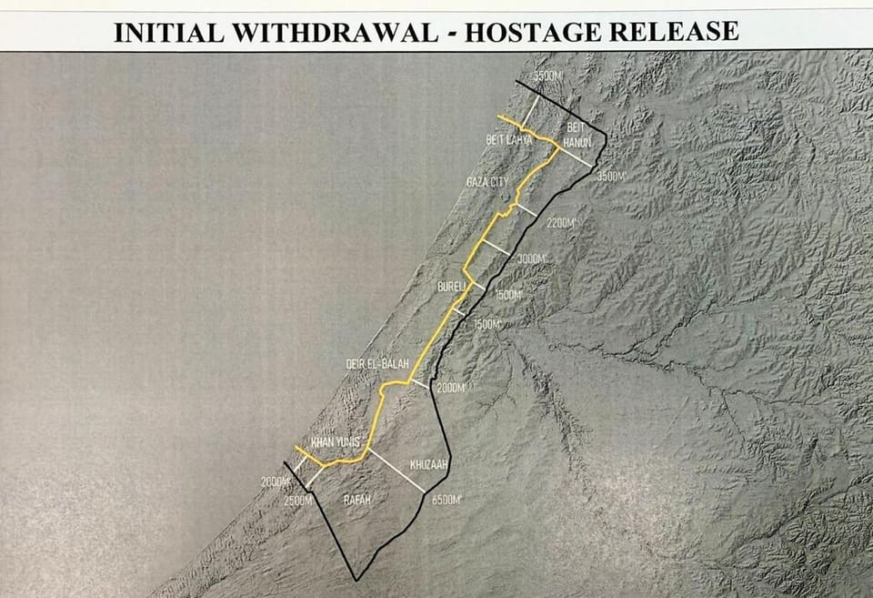

世界苦茶10月05日新闻 | 30条 | 哈马斯与以色列进入协议关键位置

哈马斯与以色列进入协议关键位置 | 中国和巴西成立10亿美元投资基金 | 捷克民粹党在竞选中大胜 | 中国阅兵销量似乎下滑
苦茶数据
美元兑人民币：7.12（昨日7.12，前日7.13）
美元兑日元：147.44（昨日147.22，前日147.63）
上证指数：休市（昨日3882，前日3862）
标普500指数：休市（昨日6715，前日6711）
比特币：124897（昨日122440，前日120106）
布伦特原油：64.53（昨日64.35，前日65.64）
中国新闻
• 香港中学历史课增加“中共成立”课题 文革不单独成题。
香港教育局将调整中学两门历史课，包括在中史科新增“中国共产党的成立”、不再单独设“文革”课题，在历史科不再设香港史的单独章节等。综合《明报》《星岛日报》报道，香港新一份《施政报告》提出优化高中中史和历史科课程框架，香港教育局星期五致函全港中学，公布中史科和历史科的课程框架更新。对比旧框架，两科同增中国近代史篇幅，中史科新增“中国共产党的成立”和“中国特色社会主义新时代”课题，要求学生概括认识共产党成立背景、意义，以及港澳回归进程等；同时增设“科技与文化”课题，要求学生了解不同朝代科技与文化的成就。在中史科旧框架属独立课题的“文化大革命”，在新框架中被纳入“社会主义建设的探索和发展”课题讨论。
• 美资深参议员欲加压中国 以遏制北京攻台。
2025年10月4日美国参议院外交关系委员会主席宣布，将提出一项新法案，旨在通过事先锁定制裁目标，建立可迅速启动的经济反制机制，以遏制中国对台湾采取军事行动的可能。美国参议院外交关系委员会主席吉姆·里施周五表示，他将提出一项法案，通过事先锁定可迅速实施的经济制裁目标，以在中国对台湾采取行动时予以威慑。来自爱达荷州的共和党参议员里施表示，他的《威慑中华人民共和国对台侵略法案》将设立一个由美国国务院和财政部牵头的工作小组，负责识别中方军事及非军事目标，以便在时，对北京实施制裁、出口管制及其他经济措施。里施在一份声明中表示。
• 淘宝现731毒气实验室玩具 被中国军方批评后下架。
中国抗战电影《731》持续热映，电商巨头阿里巴巴旗下购物平台淘宝出现一款731毒气实验室拼装积木玩具，并在被军方发文批评“冒犯民族情感，传递错误历史认知”后下架。据《北京日报》报道，淘宝上有商家售卖一款名为“731毒气实验室益智拼装积木”的玩具，包装盒上标注有“铭记历史”字样，还显示具有“爱国教育情感启蒙”“军事主题历史还原”等特色，售价29.9元人民币。淘宝信息显示，这款玩具近一周内有超过1000人浏览，周销量上涨逾10倍，是“店铺新品销冠”。
• 北京要求美驻港领事勿见不该见的人 美国务院称属外交职责。
美国驻港澳总领事伊珠丽上任后，与被称为“反中乱港分子”的人士会面。中国外交部驻港公署特派员崔建春本周约见伊珠丽，要求她不要见不该见的人。美国国务院则回应称，美国外交官的职责是代表国家，在全球推进美国利益。中国外交部驻港公署星期四在官网公布，崔建春9月30日与伊珠丽会面，就她到任后有关行为提出严正交涉，并敦促她恪守不干涉内政等国际关系基本准则，同反中乱港分子划清界限。他还明确提出“四不”要求，即不见不该见的人，不同反中乱港分子串联勾结，不得煽动、协助、教唆、资助反中乱港活动，不得干预涉港国安案件审理。
• 前清华校长王希勤再去职 动向不明。
中国国家自然科学基金委员会官网领导栏近日更新，显示曾任清华大学校长的王希勤不再担任该基金会党组成员、副主任，动向不明。《星岛日报》星期五报道了上述消息。王希勤2023年12月卸任清华大学校长，随即调任上述基金会，被视为突然被贬，如今再去职，《星岛日报》形容为再“丢官”。57岁的王希勤是清华校友，长期在母校工作，曾任清华大学电子工程系主任、信息科学技术学院副院长、副校长。2022年2月，他担任清华大学校长，但不到两年就卸任，改任中国国家自然科学基金会副主任，成为1949年之来任期最短的清华校长。鉴于清华大学的国际名气及地位，而自然科学基金会本身只是副部级单位。
• 美国在联合国事务上的退缩可能为中国等国创造“巨大的机会”。
全球机构处于十字路口，观察人士称第二个特朗普政府可能出现“无领导”时代。在纽约举行为期一周的联合国大会领导人集会后，大会主席周一发出积极调子。广告：前德国外长安娜莱娜·贝尔博克表示，各方有共同意愿“在十字路口选择正确的道路”。“如果高级别周能说明什么，那就是这个机构在履行其宗旨——联合国仍然相关，”她说。但在科菲·安南担任秘书长并谈及联合国的“十字路口”已过去23年，这一组织仍然漂泊不定。上周美国总统唐纳德·特朗普称联合国无效并质疑其存在后，人们对其未来的担忧进一步加剧。
印太新闻
• 国民党主席选举 郝龙斌和郑丽文两强相争。
台湾在野的国民党主席选举白热化，目前呈现台北前市长郝龙斌和前立委郑丽文两强相争的局面。受访学者分析，国民党本土派和地方派系较支持稳健的郝龙斌，但党内外省派多倾向由具战斗力的郑丽文，为暮气沉沉的国民党带来新气象。国民党主席10月18日改选，有郝龙斌、郑丽文、立委罗智强、孙文学校总校长张亚中、彰化前县长卓伯源和前国大代表蔡志弘六人竞逐。《美丽岛电子报》9月26日公布民调显示，当被问到“谁可以增加社会对国民党的好感或支持？”郝龙斌以22.2％居冠，郑丽文和罗智强分别为12.2％和10.4％。但这份民调是访问社会大众，并非针对国民党党员所做。星期四传出一份国民党委托艾普罗民调公司所做的民调显示。
• 台湾潜舰推手黄曙光不干了。
被称为台湾自制潜舰之父的前海军司令黄曙光上月底骤然请辞国安会咨询委员，由于时间点适逢台湾首艘自制潜舰“海鲲号”海测关键期，引发岛内舆论关注。而当前台湾国安会当中已无海军背景的咨委，黄曙光的请辞也意味着台湾潜舰自造主导权，或已回归军方。自2000年起，台湾海军便着手推动自造潜舰计划，直到2016年黄曙光担任海军司令任内，项目才首度正式编列预算启动。黄曙光也因此被称为台湾“自制防御潜舰之父”。现年68岁的黄曙光是台湾退役海军二级上将，历任台湾国防部作战及计划参谋次长室处长，海军一六八舰队舰队长，海军司令部参谋长，国防部后勤参谋次长室次长，海军舰队指挥部指挥官，海军司令部副司令，海军司令部司令。
科技新闻
• 加州的优步和Lyft司机赢得了组建工会的权利。
加州超过80万网约车司机很快将能加入工会并以独立承包人身份进行集体谈判，以争取更高工资和更好福利——这项法案由州长加文·纽森周五签署。支持者称，新法为该州私营部门集体谈判权利规模最大的一次扩展开辟了道路。该立法是长期以来工会与科技公司争斗中的一项重大妥协。加州成为继马萨诸塞州之后第二个允许优步和Lyft司机以独立承包人身份组建工会的州。马萨诸塞州选民在去年11月通过公投允许工会化，伊利诺伊和明尼苏达的司机也在争取类似权利。纽森在加州大学伯克利分校一次无关的新闻发布会上宣布了签署。他说，这项新法将赋予司机“尊严和对未来的发言权”。新法是纽森。
• 美国政府停摆导致对亚马逊和苹果的反垄断案件暂停。
政府停摆使亚马逊、苹果反垄断案暂缓 华盛顿针对大型科技公司的高调行动进展如何 谷歌目前涉及两起反垄断案件。半数政府针对科技巨头的重大反垄断案件因政府停摆而“暂停”，另一半则在资金中断期间继续推进。针对四大科技巨头——谷歌、Meta、苹果和亚马逊——的案件是华盛顿和企业界最受关注的案件之一。它们同时也是政治上最脆弱的案件，因这些公司的首席执行官正试图与唐纳德·特朗普及其白宫建立更紧密的关系。在联邦政府停摆期间，针对谷歌和Meta的案件仍在继续。两家公司都接近达成解决，法官正准备在一起谷歌案件中敲定裁决，另一场针对Meta的案件也预计将很快有判决。
• 以下是时尚行业如何利用人工智能预测下一大流行趋势。
以下是时尚界如何利用人工智能预测下一个大热趋势 曾几何时，预测时尚趋势是少数人的游戏——出席纽约、米兰、伦敦以及此刻的巴黎大秀的那些人，例如有影响力杂志的编辑们的专属领域。尽管精英观点仍然有分量，过去十年里，趋势预测的游戏已大幅扩展。像抖音、Instagram 和 Pinterest 这样的平台正在重新定义趋势传播的方式。数据公司 Launchmetrics 的一份报告显示，2024 年全球超过 40% 的消费者至少通过社交媒体购买过三次服装和配饰。“可获取的信息确实更多了，”在线时尚零售与造型服务公司 Stitch Fix 的采购与自有品牌副总裁艾米·沙利文说道。
经济新闻
• 中国和巴西成立10亿美元投资基金 首次以雷亚尔为主要计价货币。
中国与巴西将成立10亿美元投资基金。这是巴西与中国金融机构首次共同设立、以巴西货币雷亚尔作为主要计价单位的双边基金。据彭博社报道，巴西国家经济与社会发展银行与中国进出口银行已签署承诺期限和意向声明，合作成立上述基金。其中，巴西国家经济与社会发展银行将出资4亿美元，中国进出口银行则投入6亿美元，基金主要投资于能源转型、基础设施、矿产、农业和人工智能等领域。新基金计划于2026年启动，在巴西投资债券、企业股权。巴西国家经济与社会发展银行规划总监巴尔博萨表示，这是巴西与中国金融机构首次联手创建以巴西货币雷亚尔进行投资的基金。
• 停摆将延续到下周，参议院僵局持续。
政府关门将持续到下周，参议院僵持仍在继续 “我不乐观，觉得在现在这个阶段我们有人数优势，”一位参与重开政府谈判的议员说。参议院多数党领袖约翰·图恩与众议院议长迈克·约翰逊在2025年10月3日于美国国会山举行的新闻发布会上并肩出席。| Francis Chung/POLITICO 政府关门将进入第二周。参议员们周五再次否决了重启机构运作的提案，随后休会直到周一，届时领导层预计将强行就众议院通过的一项将政府拨款延长至11月21日的提案进行第五次投票。僵局正值关门影响扩大之时：白宫预算主任拉斯·沃特周五宣布，他将把目标对准伊利诺伊州的拨款，这也是另一个主要由民主党掌控的州。
• 随着中国消费者缩减非必需开支，月饼销量下滑。
中秋节主食月饼的早期销量与往年相比走软，这再次表明国内需求尚未完全回暖。虽然并非所有收到月饼的人都会吃——这些高热量的糕点口味需要习惯——但这种非必需品的交换被视为衡量消费者热情的风向标。“今年的人均预算只有140元，比去年下降了40%，尽管中秋礼品是我们最重要的员工福利之一，”广州一家企业咨询公司的行政经理Grace Qiu说。“行业非常萧条。我们失去了最大的客户，自年初以来不得不裁掉三分之一的员工。
• 中国日益增强的药物研发能力引起全球关注。
中国生物科技复兴：日益增强的药品研发能力吸引全球关注 尽管一家初创公司的近期胜利被视为“DeepSeek时刻”，专家称国内企业仍落后于世界领先制药公司 当中国医学科学院附属的顶级癌症医院首席医师赵宏在三月的一次共产党会议上告诉与会代表，一家鲜为人知的广州生物科技公司的抗癌药已经击败了全球最畅销的药物时，投资者为之一振。“作为一名长期一线的医生，我最深的感受是中国生物制药行业正处于发展的最佳时期，”他在一年一度的中国人民政治协商会议间隙对官方媒体表示。
• 中国尝试北极航道捷径 全球航运巨头避而远之。
中国利用俄罗斯和北极之间的航道运输货物，进军北极航线。全球航运巨头则重申他们远离北极航道的承诺，指出这一航道虽然距离较短，但不安全也不环保。据澎湃新闻报道，“伊斯坦布尔桥”号货轮9月27日从宁波舟山港出发前往欧洲。多数中欧集装箱船选择往南，经红海、苏伊士运河进入地中海。在红海局势因为胡塞武装而变得紧张的情况下，货船则会绕道非洲。但伊斯坦布尔桥号则选择往北，经北极航道东北航线进入欧洲。北极航道贴近俄罗斯领海，可将亚欧航程从经南非绕行的40天缩短一半。澎湃新闻引述中国科学院专家杨林生说，中国从政策上要把东北航线纳入在欧洲乃至全球的运输体系中。他说，相较于马六甲海峡或其他通道。
俄乌战争
• 乌克兰对俄罗斯石油业和无人机生产实施新一轮制裁。
乌克兰总统沃洛基米尔·泽连斯基于10月4日签署了数项延长和对俄实施的新制裁法令。新措施针对俄罗斯石油业和武器生产，尤其是无人机制造商。据总统办公厅称，其中一项法令延长了原本将到期的现有制裁，针对与俄罗斯总统弗拉基米尔·普京关系密切的商人，包括与被制裁的俄国寡头彼得·阿文，米哈伊尔·弗里德曼和安德烈·科索戈夫有关的公司。另一项旨在削弱俄国防部门并限制莫斯科获取关键技术，对33名个人和27家实体实施制裁，涵盖无人机，飞机发动机和光学设备制造商。被制裁的公司之一是Hardberry-Rusfactor。
• G7+组织就俄罗斯对乌克兰能源基础设施的袭击举行紧急会议。
为应对俄方对乌克兰能源基础设施的袭击，G7+小组于10月4日召开紧急会议，乌克兰能源部报道。能源协调的G7+小组于2022年11月在乌克兰成立，以在全面战争第一年俄方攻击期间协调对基辅能源基础设施的支持。乌克兰能源部表示，超过100个国家和国际组织的代表出席了10月4日的会议。与会方包括美国、加拿大、德国、法国、欧盟委员会和联合国开发计划署等。这次紧急会议是对10月3日夜间的一次大规模俄方袭击的回应，袭击重点针对乌克兰的油气基础设施。国营天然气公司Naftogaz首席执行官谢尔希·科列茨基表示。
• 泽连斯基表示，俄罗斯对一座火车站的袭击至少造成30人受伤。
乌克兰总统伏洛季米尔·泽连斯基表示，俄罗斯对东北部一座火车站的无人机袭击造成至少30人受伤。泽连斯基在X上发布称，初步报告显示受袭地点位于苏梅州舒斯特卡市，当时有列车工作人员和乘客在场。应急部门已赶到现场并开始救助，他补充说受伤人数仍在核实中。他还上传了一段视频，显示一节列车车厢着火受损。“俄方不可能不知道他们在袭击的是平民。这是恐怖主义，世界无权对此视而不见，”泽连斯基在X上写道。“俄罗斯每天都在夺走人的生命。只有以实力才能让他们停止。” 据该地区州长奥列赫·赫里霍罗夫和乌克兰铁路方面称，发生了两次袭击，击中两列客运列车。赫里霍罗夫称，伤者中包括三名儿童，年龄为8岁。
• 俄罗斯列宁格勒地区的一座大型炼油厂遭到无人机袭击。
乌克兰确认对靠近圣彼得堡的俄罗斯最大、最现代化炼油厂之一实施无人机袭击 乌克兰总参谋部表示，10月4日夜间，乌克兰无人机袭击了位于俄罗斯列宁格勒州基里希的一个炼油厂，引发大火，后被扑灭。目击者报告称看到基里希炼油厂发生火灾。地区州长亚历山大·德罗兹登科确认了无人机袭击和火情，但未点名该设施，并称火势已被扑灭。德罗兹登科在电报上写道：“防空部队在基里希上空击落了七架无人机。工业区的火灾已被扑灭。” 独立俄国新闻频道Astra发布的视频和照片似乎显示炼油厂发生了大爆炸并冒出火焰。总参谋部随后在社交媒体上证实了这次袭击。《基辅独立报》无法核实相关报道。该炼油厂距离乌克兰边境逾800公里。
世界新闻
• 以色列与哈马斯代表团将于10月6日在埃及举行“间接会谈”。
会谈将围绕特朗普提出的加沙停火“20点计划”，讨论交换人员的现场条件和细节安排。美国中东问题特使威特科夫、特朗普的女婿库什纳4日前往埃及，将加入会谈。特朗普4日称，以色列已经同意在加沙的“初步撤军线”，美方已向哈马斯予以说明。一旦哈马斯确认，“停火将立即生效”。停火生效后，以色列与哈马斯将开始交换以色列被扣押人员和巴勒斯坦囚犯，这将为下一阶段撤军创造条件。特朗普同时发布一张用黄色标出以色列“初步撤军线”的加沙地图。这条线与以军9月开始大规模进攻加沙城之前，以军在加沙的控制线大致相同。这意味着以色列完成“初步撤军”后，仍将控制加沙地带南部拉法市、汗尤尼斯市以及部分北部地区等大片土地。内塔尼亚胡4日说，他已指示由以色列战略事务部长德尔默率领以方代表团前往埃及，最终敲定以色列被扣押人员获释的“技术细节”，目标是将谈判限制在数日之内，希望能在“接下来几天”宣布所有被扣押人员回家这一消息。内塔尼亚胡明确表示，以色列不会从加沙全面撤军，以军将继续控制已控制的领土。哈马斯将在计划第二阶段解除武装，无论是通过外交方式还是军事途径。以军已被命令“停止在加沙城的进攻行动”，但仍在开展所谓“防御行动”。当地居民和医院称，以色列4日的攻势明显缓解，但仍有至少22人死亡。
• 格鲁吉亚示威者试图冲击第比利斯总统府。
格鲁吉亚警方与试图冲击首都第比利斯总统府的反政府抗议者发生冲突。安全部队使用水炮和辣椒喷雾驱散示威者。自从执政的“格鲁吉亚之梦”党在去年的议会选举中宣称获胜以来，这个高加索国家一直处于危机之中。亲欧盟的反对派称那次选举是被窃取的。此后政府暂停了加入欧盟的谈判。这场抗议发生在地方选举当天，反对派在政府镇压后大多选择抵制投票。此前一名组织者曾呼吁逮捕“格鲁吉亚之梦”党的领导人。周六，数万名挥舞格鲁吉亚国旗和欧盟旗帜的抗议者在第比利斯市中心游行。组织者之一，男高音歌唱家帕塔·布尔丘拉泽宣读了一份声明，敦促内务部员工服从人民意志。
• 内塔尼亚胡表示，他希望在“未来几天”宣布释放人质。
内塔尼亚胡表示希望在“未来几天”宣布人质获释 以色列总理本雅明·内塔尼亚胡表示，他希望在“未来几天”宣布被关押在加沙的人质获释。在一次电视讲话中，他还表示：“哈马斯将被解除武装，加沙将实现非军事化——要么以和平方式，要么以强硬方式，但这一目标将会实现。” 此番表态此前哈马斯在周五发布声明，同意按照美国的和平计划释放人质，但未提及解除武装，并希望就其他问题进行谈判。周六，哈马斯表示，以色列继续实施“屠杀”，在当天早些时候轰炸了加沙，并呼吁全球对以色列施加压力。双方的间接停火谈判定于周一在埃及开始。美国总统唐纳德·特朗普表示。
• 法官阻止特朗普将即将年满18岁的移民儿童拘留在成人设施的政策。
法官阻止特朗普政策在成人设施关押年满18岁的移民儿童 一位联邦法官已暂时阻止特朗普政府的一项新政策，即在移民儿童年满18岁后继续将其关押，迅速采取行动阻止原定于本周末将他们转移到成人设施的安排。美国地方法官鲁道夫·孔特雷拉斯周六向美国移民与海关执法局发出临时限制令，禁止在未陪同且未经许可独自来到美国的儿童在其成年后被关押在ICE成人拘留设施中。华盛顿特区的这位法官认定，此类自动羁押违反了他在2021年发布的禁止此类做法的法院命令。ICE与美国国土安全部周六未立即对求证邮件作出回应。将新成人人群羁押的推动。
• 州长称特朗普计划在伊利诺伊州部署国民警卫队。
特朗普计划在伊利诺伊州部署国民警卫队，州长称 特朗普计划在伊利诺伊州部署国民警卫队，州长称 特朗普政府计划联邦化300名伊利诺伊州国民警卫队成员，民主党州长JB·普利兹克周六表示。普利兹克说，国民警卫队今晨接到五角大楼的通知，部队将被征召。他未具体说明何时或在何处部署，但总统唐纳德·特朗普长期以来一直威胁要向芝加哥派兵。“今天早晨，特朗普政府的战争部给了我最后通牒：要么你们征召你们的部队，要么我们会，”普利兹克在一份声明中说。
• 多数美国犹太人认为以色列在加沙犯下了战争罪。
根据《华盛顿邮报》的一项民调，许多美国犹太人强烈反对以色列在加沙的战争行为，61%的人认为以色列犯下了战争罪，约四成的人认为以色列对巴勒斯坦人实施了种族灭绝。考虑到美国犹太人与以色列长期以来的紧密关系，这一调查结果尤其引人注目，显示出加沙战争可能正在引发一场历史性的决裂。两年前，也就是2023年10月7日，哈马斯武装人员突袭以色列，造成约1200人死亡、250人被绑架。作为回应，以色列发动了报复性入侵。根据加沙卫生部门的数据，已有超过6.6万名巴勒斯坦人在冲突中丧生，其中多数为女性和未成年人，更多人被迫流离失所，加沙地带也面临普遍饥荒。
• 在可能由最高法院审查之前，特朗普关于出生公民权的行政命令面临越来越多的法律挫折。
在可能进入最高法院审理之前，特朗普关于出生公民权的命令遭遇连番法律挫折 波士顿——在今年夏天的一个月间，四个联邦法院先后驳回了总统唐纳德·特朗普结束对非法或临时滞留者子女自动授予公民权的行政命令。周五，又有一庭作出裁定，结果同样不利。位于波士顿的第一美国巡回上诉法院由三名法官组成的小组一致裁定，这位共和党总统不得执行该命令。该法院的裁决加入了此前四个法院先前发布或维持的全国性禁令之列。关于出生公民权的最终裁断几乎肯定将落在美国最高法院。特朗普政府已请求高院受理此案。联邦法官们已明确指出，他的命令与最高法院的判例大相径庭。
• 联邦选举委员会成员只剩两人，因此其工作陷入停滞。
联邦选举委员会只剩两名成员，因此其工作陷入停滞。联邦选举委员会是负责监管竞选资金的独立机构，近日又失去了一名成员。但事实上，FEC数月来一直没有达到法定人数——至少四名委员——致使该机构无法开展大部分工作。共和党人特雷·特雷纳告诉《华盛顿观察家》称，他将于周五辞去专员一职。特雷纳未回应NPR的置评请求。这是特朗普第二任期内第三位离任的专员，此前共和党人艾伦·迪克森已离职，特朗普也解雇了民主党人艾伦·温特劳布，温特劳布与许多专家均称此举不当。“他无故解雇了我，”温特劳布本周对NPR表示。“他无先例地解雇了我我本有资格被替换，所以我预料会有人接替。让我没想到的是我居然被解雇。
• Diddy 宣判当天，法庭情绪激动。
迪迪被判刑 周五，肖恩·“迪迪”·康普斯在经过七月的一场冗长审判后被判入狱超过四年。那次审判认定他因涉及将人运送以从事卖淫的罪名成立，受害者包括他的两位前女友卡桑德拉·文图拉和代号“简”。在情绪激动的宣判听证会上，许多人为这位音乐大亨发声，其中包括他的六个长子女。
• 欧洲民粹和反移民阵营扩大，捷克亲特朗普政党在大选中获胜。
据路透报道，捷克亿万富翁安德烈·巴比什领导的ANO党在周六举行的议会选举中轻松获胜，这可能推动欧洲民粹主义、反移民阵营的壮大，并削弱对乌克兰的支持。巴比什告诉支持者，ANO党将寻求组建一党内阁，但也会与两个小党展开协商，其中包括极右翼的“自由与直接民主党”，因为ANO党在议会中并未获得绝对多数。他再次否认自己的胜选会让这个中欧国家成为欧盟和北约中不可靠的成员：“我们想拯救欧洲我们明确支持欧洲一体化和北约。” 选举结果几乎全部公布后，ANO党将取代由总理彼得·菲亚拉领导的中右翼政府。菲亚拉已向巴比什表示祝贺，并承认败选。在竞选中，ANO党承诺实现更快的经济增长，更高的工资和养老金，以及降低税收。
• 特朗普试图对波特兰施压。
特朗普在国民警卫队对峙中向波特兰施压 白宫周五表示将尝试削减对该市的资金，同时政府官员还称将向俄勒冈州增派移民与海关执法局和海关及边境保护局人员。联邦特工在2025年9月28日于俄勒冈州波特兰的美国移民与海关执法局大楼外与抗议者对峙。白宫继续向波特兰施压，周五增派联邦执法力量并提出针对该市财政的计划，此举发生在围绕特朗普总统部署国民警卫队的抗议持续之际。新闻秘书卡罗琳·利维特在一次新闻发布会上告诉记者，政府将审查削减对波特兰的联邦拨款。